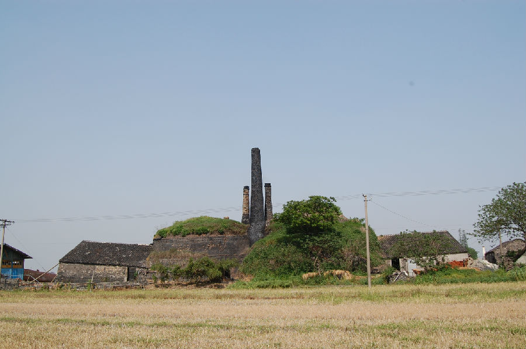

嘉兴市文物保护网 · 市级文物保护点 · 2020-11-06 · 原文

合心村土窑群位于嘉兴市秀洲区油车港镇合心村16组东临沈家荡，据工人介绍为1979年建造。现存土窑3座，功能保存完整，仍时常烧制砖瓦，总建筑占地面积2955平方米。自北向南排列，北有两个南北相接的土窑（北为1号窑，南为2号窑），1号内径5.65米、外径7.82米，窑口朝北，2号外径12.8米，窑口朝南，延伸处建有窑棚，窑棚长10.46米、宽9.27米。南距2号窑20米，原也有两个南北相接的土窑（北为3号窑），现南侧一座已被拆除，3号窑口外径10.26米，窑口朝东北方向，延伸处建有窑棚，窑棚长10.9、宽8.76米。随着全面禁止取土烧砖，此类旧窑在当地甚至嘉兴已罕见，作为生产传统建材的建筑，它将是传统建筑工艺的很好实证，具有较高的科学价值。2009年公布为嘉兴市文物保护点。